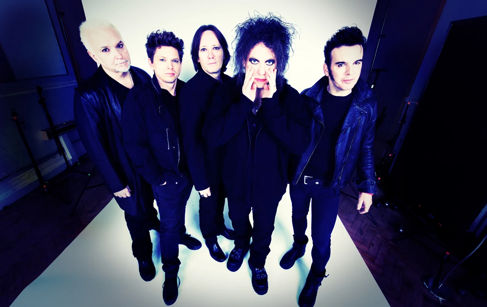

The Cure
Years Active: 1976–present
Genre/s: Gothic rock, post-punk, alternative rock, new wave
Label/s: Fiction, Suretone, Geffen, Polydor, Hansa, A&M, Elektra, Asylum, Sire, Warner
Members: Robert Smith, Simon Gallup, Roger O'Donnell, Jason Cooper, Reeves Gabrels
The Cure are an English rock band formed in Crawley in 1976 by Robert Smith (vocals, guitar) and Lol Tolhurst (drums). As of 2026, the band's line-up comprises Smith, Simon Gallup (bass), Roger O'Donnell (keyboards), Jason Cooper (drums) and Reeves Gabrels (guitar). Smith has remained the only constant member throughout numerous line-up changes since the band's formation.
The Cure's 1979 debut album, Three Imaginary Boys, and several of their early singles placed the band at the forefront of the emerging post-punk and new wave movements that were gaining prominence in the United Kingdom. The band adopted an increasingly dark and tormented style beginning with their second album, Seventeen Seconds (1980), which had a strong influence on the emerging genre of gothic rock. After the release of their fourth album, Pornography (1982), Smith started to introduce more pop into the band's music. The Cure achieved mainstream success with the albums Kiss Me, Kiss Me, Kiss Me (1987), Disintegration (1989) and Wish (1992). The Cure's best-known songs include "Boys Don't Cry" (1979), "A Forest" (1980), "Close to Me" (1985), "Just Like Heaven" (1987), "Lovesong" (1989), and "Friday I'm in Love" (1992).
The Cure have released 14 studio albums and over 40 singles, selling more than 30 million records worldwide. They were inducted into the Rock and Roll Hall of Fame in 2019. Their 14th album, Songs of a Lost World (2024), was their first release of all-new material in 16 years and received widespread acclaim, topping the charts in multiple countries.